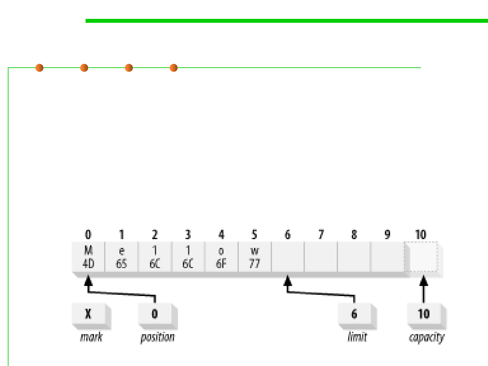

8.1 Metrics, Principles, and Methods of Construction for Performance
File Position and Limit
▪ The limit property defines either the last space available for
writing, or how much data has been written to the file.
– After finishing writing a flip() method can be called to set limit to the
current value of position, and reset position to zero, ready for reading.
▪ Various operations implicitly work on the data between position
and limit.